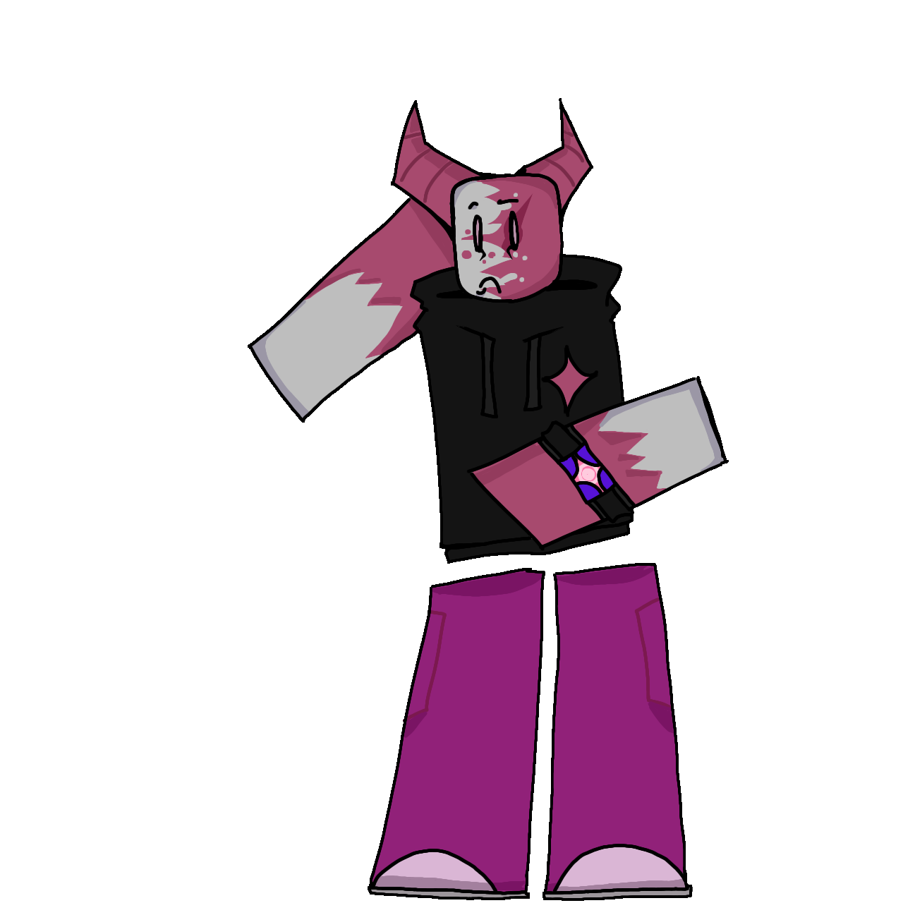
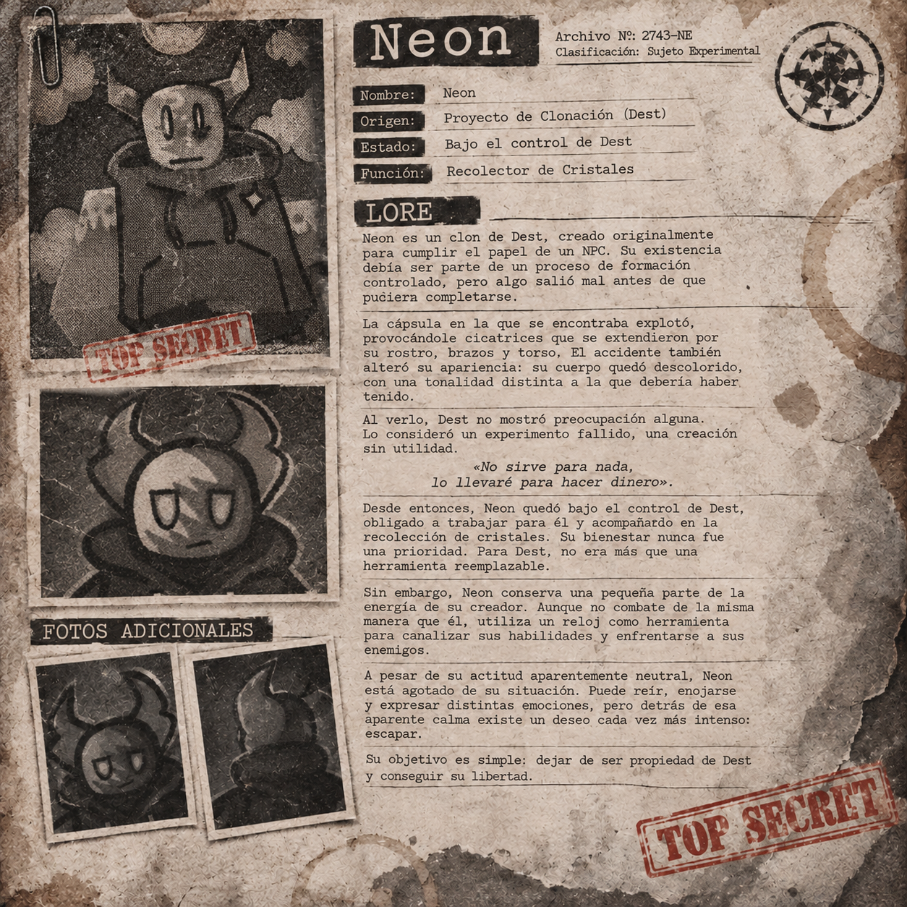
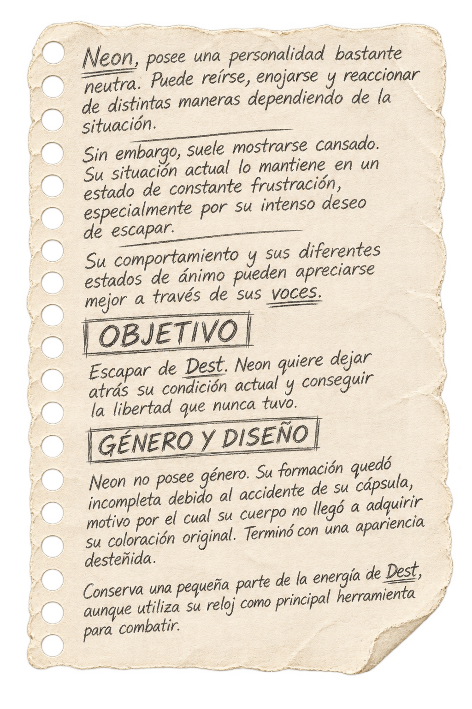

ARCHIVO DE PERSONAJE / DESTKARD
Clon de Dest
Un clon creado para funcionar como NPC. Tras un accidente durante su formación, terminó convertido en un recurso descartable para Dest. Ahora solo busca una cosa: escapar.


VOCES DE NEON
Escuchá las distintas voces de Neon.
HABILIDADES
OVERDRIVE
Neon inicia la habilidad liberando una onda expansiva que desvía proyectiles y causa una pequeña cantidad de daño.
Después, carga sus puños con energía. Sus golpes infligen daño adicional y tienen un 40% de probabilidad de provocar un segundo impacto, capaz de propagarse como un rayo hacia los enemigos cercanos.
ESQUIVA AUTOMÁTICA
Neon debe esquivar seis golpes cuerpo a cuerpo de cualquier enemigo para cargar la barra de esta habilidad.
Una vez cargada, puede activarla para esquivar automáticamente tres golpes cuerpo a cuerpo.